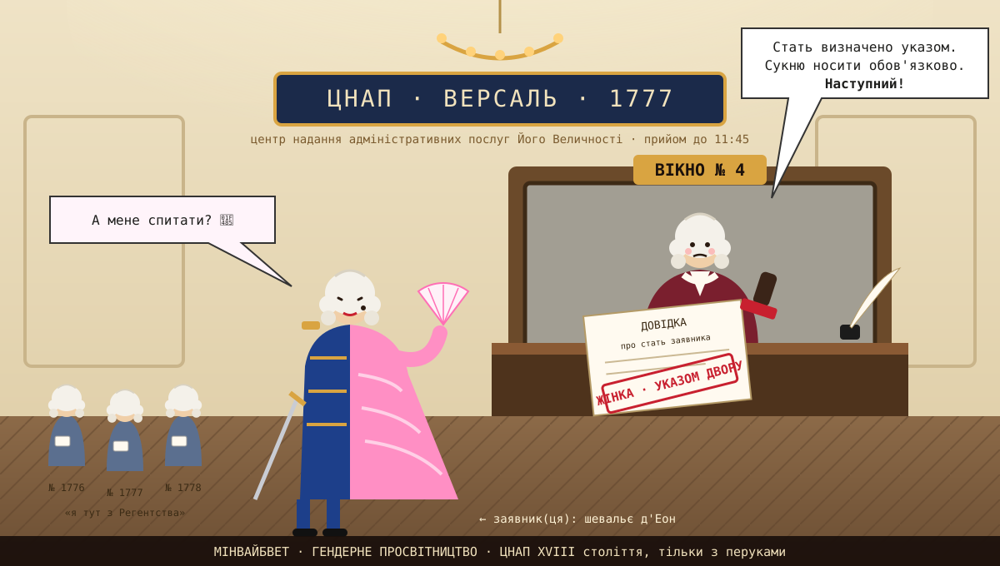

Перехід за сніданком, коронація опівдні: як працювало б право на трон, якби стать була змінною
Про один смішний твіт, салічний закон, королеву, яку коронували королем, фараонку з накладною бородою і про те, чому стать у праві завжди була не біологією, а полем в анкеті.
Учора ввечері в стрічці пролетів твіт, який зібрав пів мільйона переглядів. Суть: якби середньовіччя приймало трансгендерних людей, усе пішло б шкереберть. Уяви, ти вважаєш себе законним спадкоємцем, а тут твоя старша сестра робить перехід, і корона дістається не тобі. Під твітом хтось уточнив найголовніше: трансфобії в цьому сюжеті немає, а от мізогінія присутня. Ще хтось дописав: «Вона робить перехід за сніданком, коронація опівдні, архієпископ без зауважень».
Смішно це тому, що точно. Жарт не ламає середньовічну логіку, він її бездоганно виконує. Корона передавалася за правилом, у якому стать була не дрібницею, а ключем доступу. Змінюєш значення змінної, і система слухняно видає інший результат. Давайте подивимося, як цей код був написаний.
Розділ 1Корона як алгоритм
У Європі трон здебільшого передавався за первородством: першою в черзі стоїть найстарша дитина. Але «найстарша дитина» у різних країнах рахувалася по-різному. Якщо спростити, існувало три режими.
- Тільки чоловіки. Жінки не успадковують і навіть не передають права. Найвідоміший приклад — Франція з її салічним законом.
- Перевага чоловіків. Спершу всі сини за старшинством, і лише якщо синів немає, дочки. Так було в Англії, Іспанії, Португалії.
- Абсолютне первородство. Старша дитина успадковує незалежно від статі. Це винахід зовсім недавній, ми до нього дійдемо.
У режимі №2 твіт працює ідеально: старша сестра, яка була позаду всіх братів, після переходу стає старшим сином і обганяє молодшого брата. У режимі №1 ще драматичніше: сестра, яка не мала жодних шансів, раптом стає першою в черзі. А в режимі №3 нічого не змінюється, і це, мабуть, найкращий аргумент на користь режиму №3.
Розділ 2Франція: війна на сто років через одне правило
Салічний закон — це звід франкського права ще з початку VI століття. Він стосувався спадкування землі, а не корони: «салічна земля» не мала переходити до жінок. Майже вісімсот років про нього ніхто особливо не згадував у зв'язку з троном.
Аж поки в 1316 році не помер король Людовик X, лишивши доньку Жанну. Барони вирішили, що корону отримає не вона, а брат короля. У 1328 році згасла й ця лінія, і з'явився претендент, який мав рацію за кров'ю: англійський король Едуард III, син французької принцеси Ізабелли. Французька знать відповіла: жінка не може успадкувати корону, отже, не може й передати права. Корону отримав Філіп Валуа, а суперечка переросла в Столітню війну.
Тобто одна з найдовших воєн Європи почалася з питання, чи може право на трон пройти через жінку. Сто шістнадцять років і кілька поколінь людей, які загинули через тлумачення графи «стать».
Розділ 3Граматика трону: коли королева мусить стати королем
Мова влади теж має граматичний рід, і він не завжди поступався реальності. Коли трон діставався жінці, а посада в головах лишалася чоловічою, виходили дивовижні речі.
Ядвіга Польська. У 1384 році її коронували не королевою, а королем, латиною «rex». Не з примхи: так підкреслювали, що вона правителька сама по собі, а не дружина правителя.
Христина Шведська. Батько виховував її як принца: верхова їзда, фехтування, державні справи. Коронували її теж як короля, у 1650 році. А вже через чотири роки вона зреклася трону, перейшла в католицтво й поїхала до Рима, де жила так, як хотіла, на подив усієї Європи.
Хатшепсут. Одна з найуспішніших правительок Стародавнього Єгипту. На пізніших статуях і рельєфах вона з накладною церемоніальною бородою й у чоловічих регаліях фараона. Борода фараона не була про обличчя, вона була про посаду. Щоб виглядати законною, правителька зобразила себе такою, якою «мав» бути фараон.
Стать на троні ніколи не була про тіло. Вона була про граматику посади: хто має право стояти в цьому реченні підметом.
Розділ 4Коли стать визначає не людина, а двір
Шевальє д'Еон — французький дипломат, драгунський капітан і шпигун XVIII століття. Першу половину життя прожила як чоловік, другу як жінка. Найцікавіше тут не біографія, а бюрократія: у 1777 році французький двір офіційно визнав д'Еон жінкою й зобов'язав носити жіночий одяг. Тобто не людина визначила свою стать, а держава видала про це довідку.

Знайомий жанр, правда? Стать як графа, яку заповнює не той, кого вона стосується, а той, хто ставить печатку. Мінвайбвет авторитетно підтверджує: ЦНАП XVIII століття працював приблизно так само, як нинішній, тільки з перуками.
Розділ 5Як код переписали
Абсолютне первородство, коли трон отримує старша дитина незалежно від статі, з'явилося лише наприкінці XX століття. Першою була Швеція в 1980 році: принцеса Вікторія обігнала молодшого брата, який уже встиг побути спадкоємцем. Далі Нідерланди в 1983-му (тому наступна в черзі там принцеса Амалія), Норвегія в 1990-му, Бельгія в 1991-му, Данія у 2009-му. Британія змінила правило в 2013 році, для всіх, хто народився після 28 жовтня 2011-го.
А в Японії трон досі передається тільки по чоловічій лінії, і це предмет живої суперечки. Тобто стара програма в деяких місцях працює й сьогодні, просто тепер її видно.
Розділ 6Що з цього винести
Перше. Право ніколи не дивилося на стать як на біологію. Воно дивилося на неї як на категорію в анкеті, від якої залежить доступ. Тому твіт і смішний: він показує, що середньовічна система була б не зламана, а відкалібрована. Вона просто перерахувала б чергу.
Друге. Біологічна стать і гендер — не одне й те саме, і це не модне слово, а давня реальність. Хатшепсут не відростила бороду, а д'Еон не змінила тіло за указом двору. Змінювалася соціальна роль, мова, графа в документі. Саме з цим і працює гендер: як суспільство читає людину і які двері відчиняє чи зачиняє.
Третє, найголовніше для нашої редакції. Людина завжди суб'єкт, а не змінна в чужому алгоритмі. Коли система вирішує за тебе, хто ти, і від цього залежить корона, спадщина чи просто довідка, проблема не в людині, а в системі. Добра новина: системи переписують. Швеція переписала свою в 1980-му. ЦНАП, ми віримо, теж колись перепише. Можливо, з першого разу.
✦ ✦ ✦
Наостанок відповідь вікна №4 на запит про спадкування корони: «Стать на момент сніданку не вказана. Приходьте після коронації, з паспортом і копією».
Наступний випуск: «Клуб справжніх мужиків»
← на головну Вайбвет FM